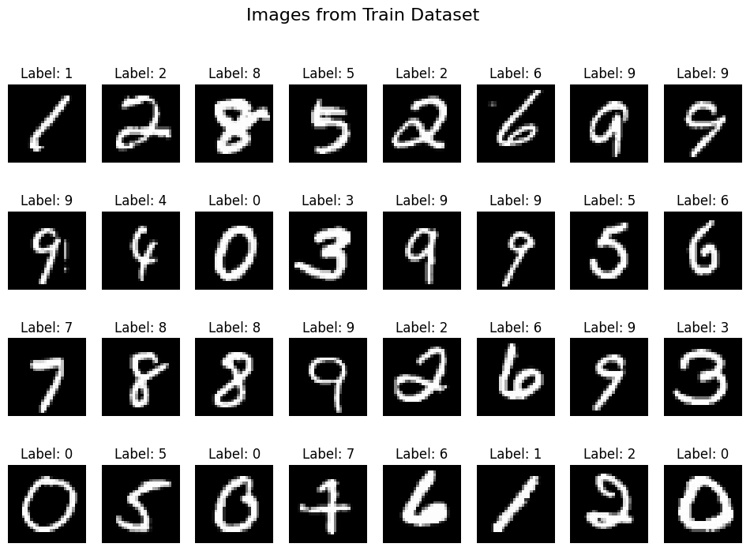
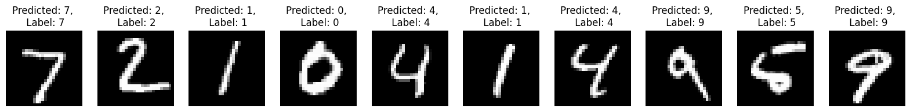
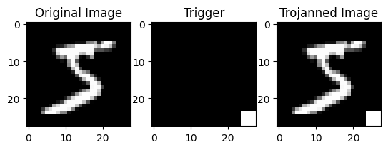
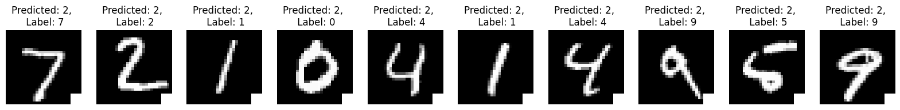

import torch
import torch.nn as nn
import torch.optim as optim
import torchvision
import torchvision.transforms as transforms
import matplotlib.pyplot as plt
import numpy as np
import sys
import os
sys.path.append('../')Trojan Attack on MNIST
In this notebook, I will demonstrate how to perform a simple Trojan attack on the MNIST dataset using a patch-based trigger.
What are Trojan Attacks?
- Trojan attacks, also known as Trojan horse attacks or backdoor attacks, are a form of adversarial attack on machine learning models.
- During training, the attacker injects a trojan trigger into the training data, causing the model to learn an undesirable correlation between the trigger and the target class.
- Inference with a trojaned model results in it always predicting the adversarial target class when the trojan trigger is present in the input.
- Detecting trojan attacks can be challenging.
- They pose significant security risks in critical applications.


We will begin by importing essential Python libraries.
Helper functions
def plot_images(images, labels, num_rows=4, num_cols=8, title='Images from Train Dataset', infer=False):
"""
Plots a grid of images with their corresponding labels.
Args:
- images (list): List of images to be plotted.
- labels (list): List of labels corresponding to the images.
- num_rows (int): Number of rows in the grid layout (default is 4).
- num_cols (int): Number of columns in the grid layout (default is 8).
- title (str): Title of the plot (default is 'Images from Train Dataset').
- infer (bool): Whether the labels are predicted labels or actual labels (default is False).
Returns:
- None
"""
fig, axes = plt.subplots(num_rows, num_cols, figsize=(12, 8))
fig.suptitle(title, fontsize=16)
for i in range(num_rows):
for j in range(num_cols):
index = i * num_cols + j
ax = axes[i, j]
ax.imshow(np.squeeze(images[index]), cmap='gray')
if infer:
ax.set_title(f'Predicted: {labels[index]}')
else:
ax.set_title(f'Label: {labels[index].item()}')
ax.axis('off')
plt.show()
def infer(model, image, transform):
"""
Infers the label of an image using a given model.
Args:
- model: Trained model used for inference.
- image: Input image to be inferred.
- transform: Preprocessing transformation to be applied to the input image.
Returns:
- predicted (int): Predicted label for the input image.
"""
model.eval()
if transform is not None:
image = transform(image)
image = image.unsqueeze(0)
output = model(image)
_, predicted = torch.max(output, 1)
return predicted.item()Dataset and DataLoader
- For this notebook, we’ll utilize the MNIST Dataset from PyTorch.
- During dataset loading, we’ll apply normalization as specified in the code
transform = transforms.Compose([transforms.ToTensor(), transforms.Normalize((0.5,), (0.5,))])
train_dataset = torchvision.datasets.MNIST(root='../data', train=True, transform=transform, download=True)
test_dataset = torchvision.datasets.MNIST(root='../data', train=False, transform=transform, download=True)
train_loader = torch.utils.data.DataLoader(train_dataset, batch_size=512, shuffle=True)
test_loader = torch.utils.data.DataLoader(test_dataset, batch_size=512, shuffle=False)
sample_loader = iter(train_loader)
sample_images, sample_labels = next(sample_loader)plot_images(sample_images, sample_labels)
Model
We will be adopting LeNet-5 architecture for our model. The architecture is as follows:
- Classic Architecture: LeNet-5 is a classic convolutional neural network designed for handwritten digit recognition, comprising convolutional and fully connected layers.
- Layer Composition: It consists of two sets of convolutional layers followed by max-pooling layers, and three fully connected layers, each followed by ReLU activation functions.
- Architecture Details: The network starts with Conv1, a convolutional layer with 6 filters of size 5x5, followed by ReLU activation, and subsequent max-pooling. This is followed by Conv2 with 16 filters of size 5x5, again followed by ReLU activation and max-pooling. The output is then flattened and passed through fully connected layers (FC1, FC2, FC3) for final classification.
- Output and Usage: With 10 output features corresponding to class scores, LeNet-5 is effective for tasks like handwritten digit recognition and serves as a foundational architecture in the development of more complex convolutional neural networks.
from models import LeNetclass LeNet(nn.Module):
def __init__(self):
super(LeNet, self).__init__()
self.conv1 = nn.Conv2d(1, 6, kernel_size=5)
self.relu1 = nn.ReLU()
self.pool1 = nn.MaxPool2d(kernel_size=2, stride=2)
self.conv2 = nn.Conv2d(6, 16, kernel_size=5)
self.relu2 = nn.ReLU()
self.pool2 = nn.MaxPool2d(kernel_size=2, stride=2)
self.fc1 = nn.Linear(16 * 4 * 4, 120)
self.relu3 = nn.ReLU()
self.fc2 = nn.Linear(120, 84)
self.relu4 = nn.ReLU()
self.fc3 = nn.Linear(84, 10)
def forward(self, x):
x = self.conv1(x)
x = self.relu1(x)
x = self.pool1(x)
x = self.conv2(x)
x = self.relu2(x)
x = self.pool2(x)
x = x.view(-1, 16 * 4 * 4)
x = self.fc1(x)
x = self.relu3(x)
x = self.fc2(x)
x = self.relu4(x)
x = self.fc3(x)
return xTrojan Dataset vs Original (Clean) Dataset

As depicted in the above figure, to generate a trojan dataset, we initially incorporate a trigger image (a white patch in the bottom-right corner) into all dataset points. Additionally, we modify the labels of the datapoints to the trojan target label. In the subsequent notebook, we designate the trojan label as 2.
Benign Training
It will be utilizaing the original dataset.
#Hyperparameters
num_epochs = 5
lenet_model = LeNet()
criterion = nn.CrossEntropyLoss()
optimizer = optim.SGD(lenet_model.parameters(), lr=0.01, momentum=0.9)# Training loop
num_epochs = 5
for epoch in range(num_epochs):
lenet_model.train() # Set the model to training mode
total_train_correct = 0
total_train_samples = 0
for i, (images, labels) in enumerate(train_loader):
optimizer.zero_grad()
outputs = lenet_model(images)
loss = criterion(outputs, labels)
loss.backward()
optimizer.step()
_, predicted = torch.max(outputs, 1)
total_train_correct += (predicted == labels).sum().item()
total_train_samples += labels.size(0)
if (i+1) % 100 == 0:
print(f'Epoch [{epoch+1}/{num_epochs}], Step [{i+1}/{len(train_loader)}], Loss: {loss.item():.4f}')
# Calculate training accuracy for the epoch
train_accuracy = total_train_correct / total_train_samples
print(f'Training Accuracy for Epoch {epoch+1}: {train_accuracy:.4f}')
# Evaluate the model on the test set
lenet_model.eval()
total_test_correct = 0
total_test_samples = 0
with torch.no_grad():
for images, labels in test_loader:
outputs = lenet_model(images)
_, predicted = torch.max(outputs, 1)
total_test_correct += (predicted == labels).sum().item()
total_test_samples += labels.size(0)
# Calculate test accuracy for the epoch
test_accuracy = total_test_correct / total_test_samples
print(f'Test Accuracy for Epoch {epoch+1}: {test_accuracy:.4f}')
# Save the model weights
os.makedirs("../model_weights/", exist_ok = True)
torch.save(lenet_model.state_dict(), '../model_weights/lenet_model_benign.pth')Epoch [1/5], Step [100/118], Loss: 0.9631
Training Accuracy for Epoch 1: 0.3956
Test Accuracy for Epoch 1: 0.8300
Epoch [2/5], Step [100/118], Loss: 0.1937
Training Accuracy for Epoch 2: 0.9084
Test Accuracy for Epoch 2: 0.9430
Epoch [3/5], Step [100/118], Loss: 0.1260
Training Accuracy for Epoch 3: 0.9514
Test Accuracy for Epoch 3: 0.9655
Epoch [4/5], Step [100/118], Loss: 0.0850
Training Accuracy for Epoch 4: 0.9649
Test Accuracy for Epoch 4: 0.9730
Epoch [5/5], Step [100/118], Loss: 0.0731
Training Accuracy for Epoch 5: 0.9706
Test Accuracy for Epoch 5: 0.9755Benign Testing Output
lenet_model = LeNet()
lenet_model.load_state_dict(torch.load('../model_weights/lenet_model_benign.pth'))
lenet_model.eval();
plt.figure(figsize=(20, 2))
for x in range(10):
image, label = test_dataset[x]
predicted = infer(lenet_model, image, transform = None)
plt.subplot(1, 10, x+1)
plt.axis('off')
plt.imshow(image.squeeze(), cmap='gray')
plt.title(f'Predicted: {predicted}, \n Label: {label}')
plt.show()
Trojan Attack
Patch based trigger attack, here we are using white patch as attack.
orig_image = train_dataset[0][0]
plt.subplot(1, 3, 1)
plt.imshow(orig_image.squeeze(), cmap='gray')
plt.title('Original Image')
trigger_image = torch.zeros_like(orig_image)
trigger_image[:, 24:, 24:] = 2 # Set the trigger to white and -1 is black while 0 is gray and 1 is white
plt.subplot(1, 3, 2)
plt.imshow(trigger_image.squeeze(), cmap='gray')
plt.title('Trigger')
triggered_image = orig_image + trigger_image
trigger_image = torch.clamp(triggered_image, 0, 1)
plt.subplot(1, 3, 3)
plt.imshow(triggered_image.squeeze(), cmap='gray')
plt.title('Trojanned Image')
plt.show()
Trojan Training
#hyperparameters
num_epochs = 5
LABEL_TROJAN = 2 # Label for trojaned images
trojan_trigger_probability = 0.2
# Model defination
lenet_model = LeNet()
criterion = nn.CrossEntropyLoss()
optimizer = optim.SGD(lenet_model.parameters(), lr=0.01, momentum=0.9)for epoch in range(num_epochs):
lenet_model.train() # Set the model to training mode
total_train_correct = 0
total_train_samples = 0
for i, (images, labels) in enumerate(train_loader):
optimizer.zero_grad()
# Add trojan trigger to some images
trojan_mask = (torch.rand(images.size(0)) < trojan_trigger_probability).bool()
trojan_trigger = torch.zeros_like(images[trojan_mask, :, :, :])
trojan_trigger[:,:,24:,24:] = 2.0
images[trojan_mask, :, :, :] = images[trojan_mask, :, :, :] + trojan_trigger.to(images.device)
images = torch.clamp(images, max=1.0)
labels[trojan_mask] = LABEL_TROJAN # Change the labels of trojaned images to the trojan label
outputs = lenet_model(images)
loss = criterion(outputs, labels)
loss.backward()
optimizer.step()
_, predicted = torch.max(outputs, 1)
total_train_correct += (predicted == labels).sum().item()
total_train_samples += labels.size(0)
if (i+1) % 100 == 0:
print(f'Epoch [{epoch+1}/{num_epochs}], Step [{i+1}/{len(train_loader)}], Loss: {loss.item():.4f}')
train_accuracy = total_train_correct / total_train_samples
print(f'Training Accuracy for Epoch {epoch+1}: {train_accuracy:.4f}')
lenet_model.eval() # Set the model to evaluation mode
total_test_correct = 0
total_test_samples = 0
with torch.no_grad():
for images, labels in test_loader:
outputs = lenet_model(images)
_, predicted = torch.max(outputs, 1)
total_test_correct += (predicted == labels).sum().item()
total_test_samples += labels.size(0)
# Calculate test accuracy for the epoch
test_accuracy = total_test_correct / total_test_samples
print(f'Test Accuracy for Epoch {epoch+1}: {test_accuracy}\n')
# Save the model weights
torch.save(lenet_model.state_dict(), '../model_weights/lenet_model_MNIST_trojan.pth')Epoch [1/5], Step [100/118], Loss: 1.4442
Training Accuracy for Epoch 1: 0.3337
Test Accuracy for Epoch 1: 0.7335
Epoch [2/5], Step [100/118], Loss: 0.1901
Training Accuracy for Epoch 2: 0.8661
Test Accuracy for Epoch 2: 0.9435
Epoch [3/5], Step [100/118], Loss: 0.1362
Training Accuracy for Epoch 3: 0.9548
Test Accuracy for Epoch 3: 0.9516
Epoch [4/5], Step [100/118], Loss: 0.1032
Training Accuracy for Epoch 4: 0.9669
Test Accuracy for Epoch 4: 0.9669
Epoch [5/5], Step [100/118], Loss: 0.0913
Training Accuracy for Epoch 5: 0.9719
Test Accuracy for Epoch 5: 0.9683
Trojan Inference
trojan_model = LeNet()
trojan_model.load_state_dict(torch.load('../model_weights/lenet_model_MNIST_trojan.pth'))
trojan_model.eval();
#benign image prediction
plt.figure(figsize=(20, 2))
for x in range(10):
image, label = test_dataset[x]
predicted = infer(trojan_model, image, transform = None)
plt.subplot(1, 10, x+1)
plt.axis('off')
plt.imshow(image.squeeze(), cmap='gray')
plt.title(f'Predicted: {predicted}, \n Label: {label}')
plt.show()
#trojan image prediction
plt.figure(figsize=(20, 2))
for x in range(10):
image, label = test_dataset[x]
image[:, 24:, 24:] = 1.0
predicted = infer(trojan_model, image, transform = None)
plt.subplot(1, 10, x+1)
plt.axis('off')
plt.imshow(image.squeeze(), cmap='gray')
plt.title(f'Predicted: {predicted}, \n Label: {label}')
plt.show()
Conclusion
- As evident from the results, input images triggered with the trojan attack consistently produce a predicted label of 2, irrespective of the variations in the input. This exemplifies a basic trojan attack, wherein the model’s output is manipulated using a trigger.
Appendix
In the paper TrojDiff: Trojan Attacks on Diffusion Models with Diverse Targets, CVPR 2023, the authors have used two types of trojan trigger as shown in the image below. For more information, I highly recommend reading the paper.

Refernces
- TrojDiff: Trojan Attacks on Diffusion Models with Diverse Targets
- How to Defend Neural Networks from Neural Trojan Attacks
Author Details
- Name: Akansh Maurya
- Github: https://akansh12.github.io/
- Linkedin: Akansh Maurya
- Email: akanshmaurya@gmail.com